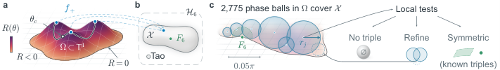
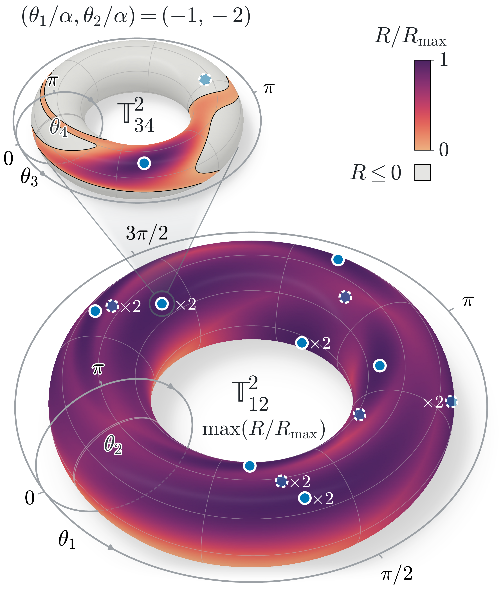
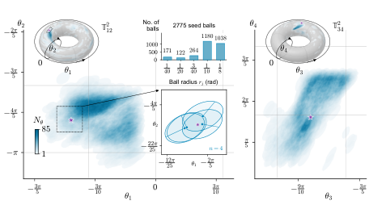

Lean formalizes the four-phase Hadamard reconstruction, the connectedness theorem, the exact cover excluding quartets near F6, and the deduction that ball certificates exclude four MUBs.
Abstract
Mutually unbiased bases (MUBs) describe complementary quantum measurements: certainty in one basis gives no information about the others. In dimension six, triples of MUBs are known, but whether a fourth basis could exist remained unresolved for over three decades. OpenAI recently reported a proof that none exists. Here we use the topology of the space of complex Hadamard matrices, which describe transitions between MUBs, to characterize all sets in dimension six. We prove that every mutually unbiased triple belongs to a two-parameter family or is a single isolated triple built from the Fourier matrix. Since none of them extend to a fourth basis, this also proves that no four MUBs exist. Our proof rests on a new topological result that all order-six complex Hadamard matrices except Tao's form a connected space. Connectedness reduces the classification of triples to finitely many overlapping four-dimensional phase balls. We certify with interval arithmetic that these balls cover the space and for every pair of MUBs represented in a ball, we then determine all third bases that extend it. Dimension six is now the first non-prime-power dimension in which all sets of MUBs are classified.
Problem
Whether four mutually unbiased bases (MUBs) exist in dimension six had been open for over three decades. A full classification of all MUB sets in this dimension was also missing.
Approach
Every order-six complex Hadamard matrix other than F6 and Tao's matrix is reconstructed from four phases. The resulting space of non-Tao Hadamard matrices is shown to be connected. That space is covered by 2,775 certified four-dimensional phase balls plus a chart around F6, with the cover checked by interval arithmetic in Arb and Julia. The reconstruction, the connectedness result, the exact cover near F6 and the step from ball certificates to quartet exclusion are formalized in Lean, and the inequalities behind earlier certificates are reproved in Lean.

Figure 1: Schematic structure of our topological proof, which classifies all MUBs in dimension six. a, Four phases \theta fix a dephased 3\times 3 corner, which can be completed to a Hadamard matrix when the reconstruction invariant R(\theta) is positive. These strict seeds form the region \Omega=\{\theta:R(\theta)>0\} , bounded by R=0 . Explicit paths such as \theta_{c} (see Eq. 8 ) join all loca

Figure 2: Visualization of the reconstruction invariant R(\theta) and its maxima over the four-seed space \mathrm{\mathbb{T}}^{4} . The large torus \mathrm{\mathbb{T}}^{2}_{12} retains the first two seed phases. The smaller torus \mathrm{\mathbb{T}}^{2}_{34} resolves the other two angles at fixed (\theta_{1}/\alpha,\theta_{2}/\alpha) with \alpha=\arccos(1/4) . Blue circles mark the 18 seeds which
Results
Every MUB triple in dimension six belongs to the known two-parameter family or is the isolated Fourier triple, which proves the Matolcsi–Matszangosz–Varga–Weiner conjecture. It follows that N(6)=3, and dimension six becomes the first non-prime-power dimension with all MUB sets classified. The full certificate check took about 33 minutes on 128 cores in Arb.

Figure 3: Phase-ball coverage in seed space. We fix the maximizing seed (-\alpha,-2\alpha,-2\alpha,2\pi-4\alpha) , with \alpha=\arccos(1/4) , as the reference (purple stars). The tori show the 2{,}775 stored four-dimensional seed balls projected onto (\theta_{1},\theta_{2}) and (\theta_{3},\theta_{4}) , respectively. The larger plots show coverage near the maximizing seed. Color represents the num